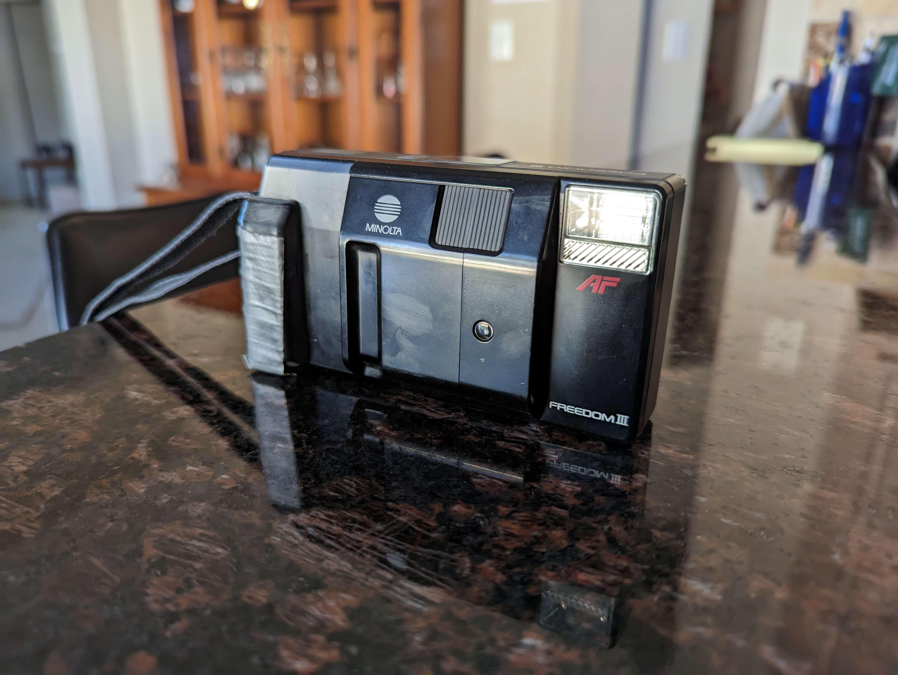

photography is a hobby that i've been doing on and off for a while now. it started with my step-dads old camera, a sony mavica FD-92. a camera that uses the wonderful floppy disk as its storage medium. i never saw it as a limitation, as i quite like the 'lo-fi' asthetic of the pictures. this may be a recurring theme.
over the winter holiday, i came across a new camera, and here is a picture of the camera:
it is a Mintola Freedom III, a point-and-shoot camera that shoots 135 (35mm) film. the film part is the only reason i picked it up, and it has now became my new hobby/hyperfixation. the worst part of film(more of an issue with ADHD) is how long it takes to get the pictures. but that is whatever.
paragraph